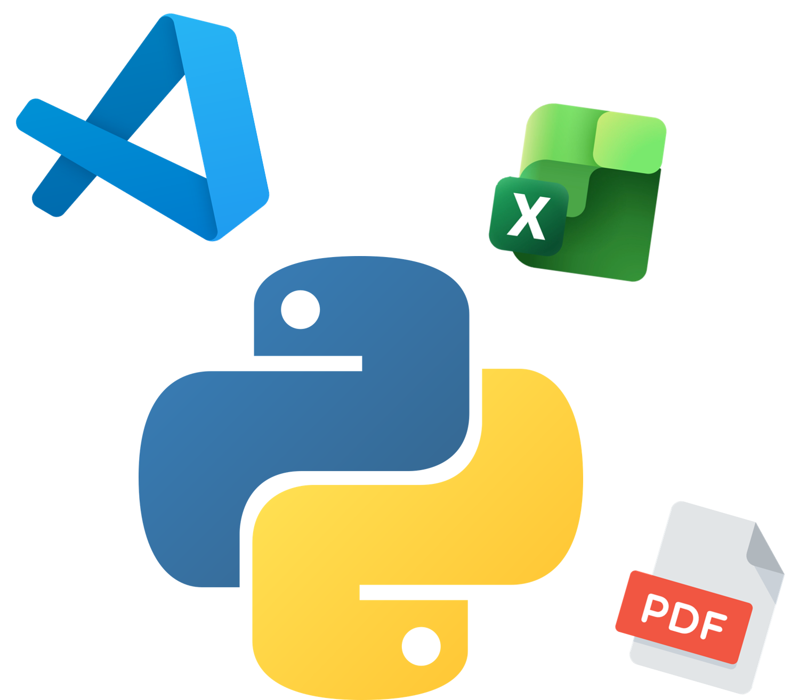
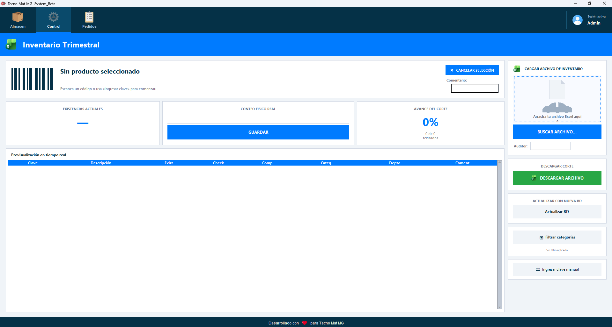
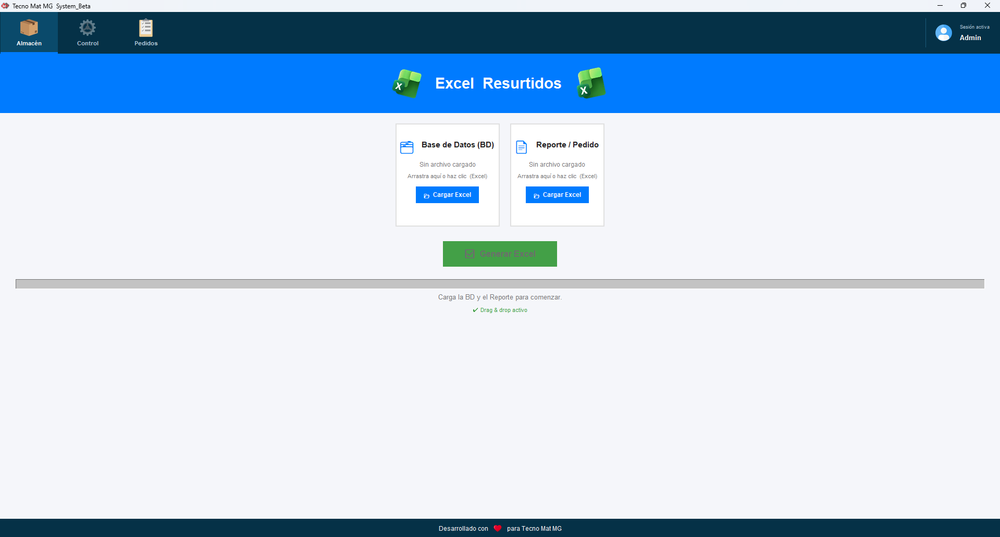
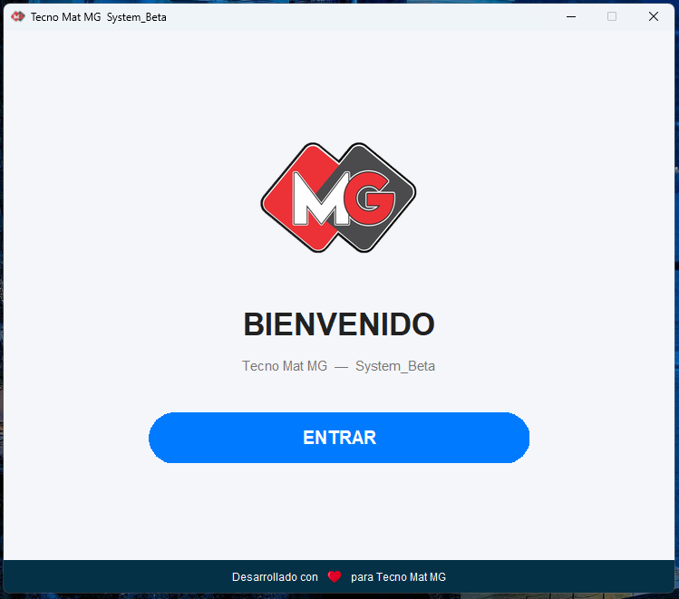

Especialista en desarrollo de soluciones con Python, optimización de flujos de trabajo con Excel y procesamiento inteligente de archivos PDF.
Cotizar mi proyecto
"La automatización de pedidos PDF a Excel redujo nuestro tiempo de procesamiento en un 70%. Excelente trabajo."
"El software de control de inventarios eliminó por completo los errores de captura manual que teníamos."
"Soluciones rápidas, código limpio en Python y una interfaz muy intuitiva con CustomTkinter."

El Problema: El conteo físico trimestral era lento, propenso a errores humanos y difícil de auditar.
La Solución: Desarrollamos una interfaz intuitiva con Python que agiliza el conteo, permite búsquedas rápidas y genera reportes automáticos de diferencias.

El Problema: Consolidar datos de múltiples reportes Excel de proveedores requería horas de copiar y pegar manualmente.
La Solución: Implementamos un script que lee, limpia y unifica datos de manera automática, entregando el reporte final en segundos.

El Problema: Las herramientas internas no tenían control de acceso, poniendo en riesgo la integridad de la información sensible.
La Solución: Diseñamos un inicio de sesión seguro con cifrado que garantiza que solo personal autorizado acceda a las funciones críticas.
Soy un apasionado de la eficiencia y la tecnología. Combino mis conocimientos en Ingeniería Industrial con el desarrollo en Python para crear herramientas que eliminan tareas repetitivas. Mi objetivo es ayudar a las empresas a escalar mediante la automatización inteligente, optimizando flujos de trabajo y transformando datos complejos en soluciones simples y funcionales.